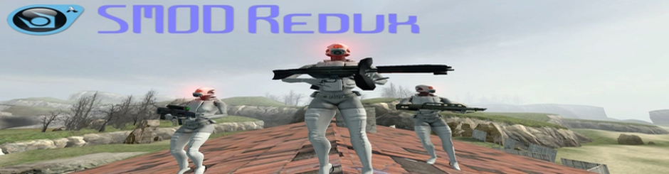

Home
About
Download
Media
SMOD Wiki
Gift
SMOD Redux Version 10 (V2)
Posted by FreshadWiano on
21/02/2012 at 22:44 PM (BAKU)
- Added new opponents
- New weapons
- Steam Fix
- New NPCs
- Fixed some bugs
Copyright © SMOD Development Team 2012
Site by FreshadWiano